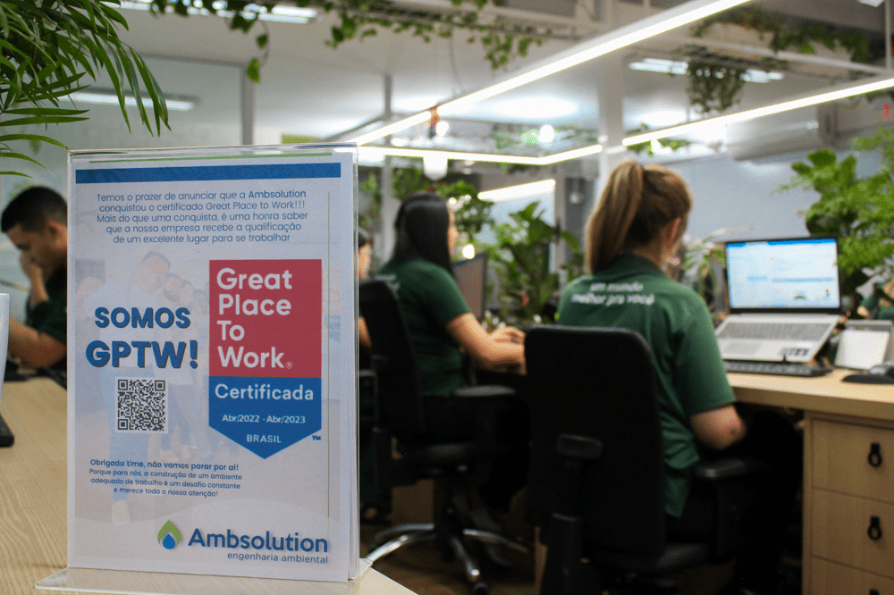

Sobre a Ambsolution
Conheça a Ambsolution
A Ambsolution é uma empresa de engenharia ambiental que atua há
10 anos oferecendo serviços de inteligência ambiental para empresas
preocupadas com seus impactos no meio ambiente e na sociedade.
Com
um atendimento personalizado, a empresa busca entender as necessidades
de cada cliente e apresentar soluções inovadoras e exclusivas para cada
caso em específico.
Conquistas e certificações
Fundada em 2012 como consultoria especializada em Gerenciamento de Áreas Contaminadas, a Ambsolution expandiu seu portfólio a partir de 2014, passando a oferecer serviços como Gerenciamento de Resíduos, Licenciamento Ambiental, Projetos de Reflorestamentos e Compensação Ambiental, dentre outros. Em 2017, a empresa conquistou o certificado de acreditação ABNT NBR ISO/IEC 17.025 e, em 2019, realizou uma reestruturação que melhorou sua infraestrutura e permitiu a criação de uma Central de Transbordo.
Em 2022, a empresa recebeu a certificação GPTW - Great Place to Work, reconhecendo-a como um excelente local para se trabalhar.
Missão e objetivo
A empresa Ambsolution tem se destacado como uma referência no
Gerenciamento de Áreas Contaminadas, Gestão de Resíduos e Projetos
de Reflorestamento e Compensação Ambiental.
A missão da empresa vai além
de prestar serviços ao meio ambiente, ela busca oferecer soluções
criativas e mediar situações para obter o melhor resultado para a
sociedade. O objetivo da Ambsolution é criar um mundo melhor para
todos.